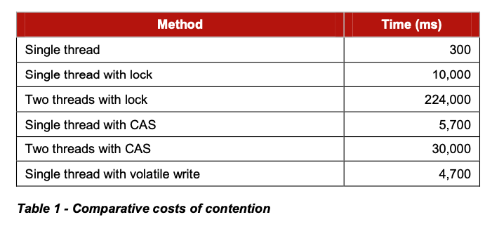

Disruptor: High performance alternative to bounded queues for exchanging data between concurrent threads
https://lmax-exchange.github.io/disruptor/disruptor.html
内核态锁的本身开销也是非常大的，开销来自两个方面：这个线程被切换出去之后到再次运行的时间不可控；另外因为切换出去之后icache和dcache被冲刷掉。
locks provide mutual exclusion and ensure that the visibility of change occurs in an ordered manner. Locks are incredibly expensive because they require arbitration when contended. This arbitration is achieved by a context switch to the operating system kernel which will suspend threads waiting on a lock until it is released. During such a context switch, as well as releasing control to the operating system which may decide to do other house-keeping tasks while it has control, execution context can lose previously cached data and instructions. This can have a serious performance impact on modern processors. Fast user mode locks can be employed but these are only of any real benefit when not contended.
We will illustrate the cost of locks with a simple demonstration. The focus of this experiment is to call a function which increments a 64-bit counter in a loop 500 million times. This can be executed by a single thread on a 2.4Ghz Intel Westmere EP in just 300ms if written in Java. The language is unimportant to this experiment and results will be similar across all languages with the same basic primitives.
Once a lock is introduced to provide mutual exclusion, even when the lock is as yet un-contended, the cost goes up significantly. The cost increases again, by orders of magnitude, when two or more threads begin to contend. The results of this simple experiment are shown in the table below:
相比使用内核态锁，使用用户态的CAS的代价是更小的，但是CAS本身也不是没有代价的：重试以及memory barrier造成的cache刷新。
This CAS approach is significantly more efficient than locks because it does not require a context switch to the kernel for arbitration. However CAS operations are not free of cost. The processor must lock its instruction pipeline to ensure atomicity and employ a memory barrier to make the changes visible to other threads. CAS operations are available in Java by using the java.util.concurrent.Atomic* classes.
If the critical section of the program is more complex than a simple increment of a counter it may take a complex state machine using multiple CAS operations to orchestrate the contention. Developing concurrent programs using locks is difficult; developing lock-free algorithms using CAS operations and memory barriers is many times more complex and it is very difficult to prove that they are correct.

关于memory barrier文章里面也有些说明. Disruptor是使用Java来编写的，只需要遵循java memory model就行，变量直接使用volatile就可以保证(原子操作??)以及memory barrier.
Modern CPUs are now much faster than the current generation of memory systems. To bridge this divide CPUs use complex cache systems which are effectively fast hardware hash tables without chaining. These caches are kept coherent with other processor cache systems via message passing protocols. In addition, processors have “store buffers” to offload writes to these caches, and “invalidate queues” so that the cache coherency protocols can acknowledge invalidation messages quickly for efficiency when a write is about to happen.
What this means for data is that the latest version of any value could, at any stage after being written, be in a register, a store buffer, one of many layers of cache, or in main memory. If threads are to share this value, it needs to be made visible in an ordered fashion and this is achieved through the coordinated exchange of cache coherency messages. The timely generation of these messages can be controlled by memory barriers.
A read memory barrier orders load instructions on the CPU that executes it by marking a point in the invalidate queue for changes coming into its cache. This gives it a consistent view of the world for write operations ordered before the read barrier.
A write barrier orders store instructions on the CPU that executes it by marking a point in the store buffer, thus flushing writes out via its cache. This barrier gives an ordered view to the world of what store operations happen before the write barrier.
A full memory barrier orders both loads and stores but only on the CPU that executes it. Some CPUs have more variants in addition to these three primitives but these three are sufficient to understand the complexities of what is involved. In the Java memory model the read and write of a volatile field implements the read and write barriers respectively. This was made explicit in the Java Memory Model3 as defined with the release of Java 5.
CPU对于cache预取是非常智能的，支持固定长度的stride预取。但是这个stride不能太大，最好不要超过2K bytes.
When accessing memory in a predictable manner CPUs are able to hide the latency cost of accessing main memory by predicting which memory is likely to be accessed next and pre-fetching it into the cache in the background. This only works if the processors can detect a pattern of access such as walking memory with a predictable “stride”. When iterating over the contents of an array the stride is predictable and so memory will be pre-fetched in cache lines, maximizing the efficiency of the access. Strides typically have to be less than 2048 bytes in either direction to be noticed by the processor. However, data structures like linked lists and trees tend to have nodes that are more widely distributed in memory with no predictable stride of access. The lack of a consistent pattern in memory constrains the ability of the system to pre-fetch cache-lines, resulting in main memory accesses which can be more than 2 orders of magnitude less efficient.
对于queue, 实际运行中大部分情况都是full/empty, 很少能够保持在中间的状态.
而对于full/empty状态来说，意味着producer/consumer都在访问非常相近的位置，所以冲突是非常严重的。
Queue implementations tend to have write contention on the head, tail, and size variables. When in use, queues are typically always close to full or close to empty due to the differences in pace between consumers and producers. They very rarely operate in a balanced middle ground where the rate of production and consumption is evenly matched. This propensity to be always full or always empty results in high levels of contention and/or expensive cache coherence. The problem is that even when the head and tail mechanisms are separated using different concurrent objects such as locks or CAS variables, they generally occupy the same cache-line.
选择CV还是CAS是主要是考虑CPU资源是否充足。
Consumers wait for a sequence to become available in the ring buffer before they read the entry. Various strategies can be employed while waiting. If CPU resource is precious they can wait on a condition variable within a lock that gets signalled by the producers. This obviously is a point of contention and only to be used when CPU resource is more important than latency or throughput. The consumers can also loop checking the cursor which represents the currently available sequence in the ring buffer. This could be done with or without a thread yield by trading CPU resource against latency. This scales very well as we have broken the contended dependency between the producers and consumers if we do not use a lock and condition variable. Lock free multi-producer – multi-consumer queues do exist but they require multiple CAS operations on the head, tail, size counters. The Disruptor does not suffer this CAS contention.